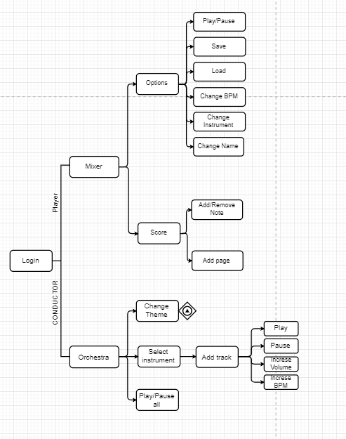
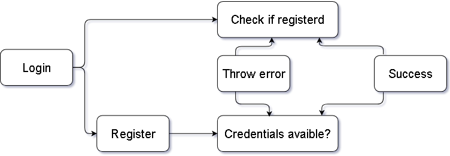
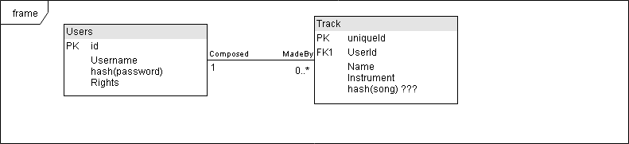
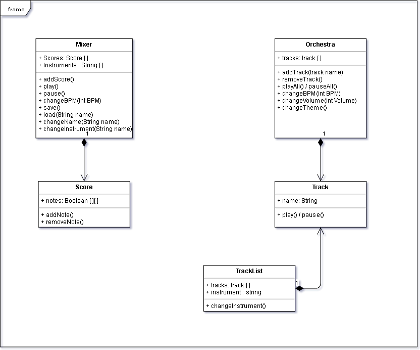

Faculty of computer science,
"Alexandru Ioan Cuza" University of Iași
—
Iași,
Iași,
România
Concepts
HTML
HTML
, by
TimBerners-Lee; published in
(accessed on
)
.
Hypertext Markup Language (HTML) is the standard markup
language for creating web pages and web applications. With Cascading Style Sheets (CSS) and JavaScript,
it forms a triad of cornerstone technologies for the World Wide Web
CSS
CSS
, by
HåkonWium-Lie; first proposed in
(accessed on
)
.
Cascading Style Sheets (CSS) is a style sheet language used for
describing the presentation of a document written in a markup language like HTML. CSS is a cornerstone
technology of the World Wide Web, alongside HTML and JavaScript.
JavaScript
JS
, by
National Center for Supercomputing Applications,
University of Illinois at Urbana-Champaign
—
Urbana and Champaign,
Illinois,
U.S.; published in
(accessed on
)
.
JavaScript, often abbreviated as JS, is a high-level,
interpreted programming language. It is a language which is also characterized as dynamic, weakly typed,
prototype-based and multi-paradigm. Alongside HTML and CSS, JavaScript is one of the three core
technologies of the World Wide Web.
GitHub
GitHub
, by
GitHub Inc.,
Microsoft Corporation
—
San Francisco,
California,
U.S.; started in
(accessed on
)
.
GitHub Inc. is a web-based hosting service for version control
using Git. It is mostly used for computer code. It offers all of the distributed version control and
source code management (SCM) functionality of Git as well as adding its own features. It provides access
control and several collaboration features such as bug tracking, feature requests, task management, and
wikis for every project.
Our implementation using these concepts
First steps
Down here you can see a sketch we made before starting to work.
Sketch for how the alerts should be previewed
For code management we chose Git and the tool we used
GitHub
Now some sneaky peaks inside our code
Index page only with navigator menuHere is some of the css responsible with the responsiveness of the navigatorAnd the javascript functions which is behind the menu
Final product
Users will be able to login/register with or without
facebook(quick method).
And the ultimate goal for this project is to develop an
application in which the users can easily compose their own music and mix it with other songs.
Mixer PageDirijor Page
Project Structure
A basic flowchart of our application

Application flowchart
Login

Login diagram
Will be based on token authentication and re-seed
Database

Database diagram
There will be 2 tables:
Users: composer, orchestra master
Songs: 2 possible representations (as a "song" / as notes project - unprocessed audio )
UML

UML Diagram
UML in detail
Mixer component
💨 It keeps a list of user's scores and a list of instruments
from which the user can select
Methods:
✔ AddScore() ➡ extends the
scores with 8 note columns
✔ Play() ➡ renders current
state of the project and plays it
✔ Pause() ➡ pauses playing
✔ changeBpm() ➡ changes the BPM
for each note
✔ Save(String songName, String
instrumentName) ➡ saves the state of the project to the database and renders the song so that it can be
loaded in the orchestra
✔ Load(String songName) ➡ takes
the project state of the selected song from database
✔ ChangeName(String name) ➡
changes song name
✔ ChangeInstrument(String
instrumentName) ➡ changes the notes according to the instrument
Score component
💨 Keeps a representation of each note, repeated 8 times
Methods:
✔ Add() ➡ event firing note
selection
✔ Remove() ➡ event firing note
deselection
Orchestra component
💨 It keeps a list of user selected tracks for playing together
Methods:
✔ AddTrack(String trackName) ➡
adds new track to the list
✔ RemoveTrack(trackName) ➡
removes track from the list
✔ PlayAll()/PauseAll() ➡
plays/pauses the orchestra (all tracks simultaneously
✔
Play(trackName)/Pause(trackName) ➡ plays/pauses the preview of a track
✔ changeBpm() ➡ changes the
volume at which the track plays
✔ changeVolume(trackName) ➡
changes the volume at which the track plays
✔ changeTheme(trackName) ➡
changes the theme of the application (these could be a service for the whole app)
Track component
✔ Audio "object"/ render result after Save() from the mixer
TrackList component
💨 It keeps a list of all available tracks from the
instrument
list
Methods:
✔
ChangeInstrument(instrumentName) ➡ when the user chooses another insturment it fires an event which
changes the list of tracks visible
Patterns used
👀 IIFE ➡ immediately invoked functions used for models creating
Mostly, them will create our components where needed. Examples:
✔ createTrackList()
✔ createCard()
👀 Observer ➡ observes the modifications of tracks (new track saved,
existing track edited, deleting track) and notifies TrackList
👀 Module Pattern ➡ for Score component and any other only function
editable component
Storage
👀 Cloud ➡ Microsoft Azure/ NoSQL/ AWS
👀 localStorage/sessionStorage ➡ keeps the state of the currently
produced song in mixer
after a track is dragged into a valid dropzone area, it receives a matrix of scheduled notes to play and creates corresponding number of audio elements for each track (16) by calling createAudio()
createAudio()
creates audio HTML element and a gain for it
reload()
restarts addInstrumentPartiture() for each track loaded
stopAll()
resets all intervals
playAll()
sets startedAt to Date.now() and calls play for each track
play(id)
starts interval for the selected track
resumeAll()
resumes audio context
pauseAll()
suspends audio context
Other functions
mute()
sets gain to 0 for each track
unmute()
sets gain to previous value that each track had
changeVolume()
sets gain to the value specified using the slider
changeBpm
changes frequency for setInterval
Web Audio API
playing audio notes in mp3-base64 format
Drag and Drop API
taking the partiture one track has and move along with it to the active songs area (upper part)
Firebase
user logging and loading list of songs for each available instrument
Problems:
Midi.js library is quite old , and hasn't been updated in over 4 years so there are a lot of
deprecated stuff in it , from loading an audiocontext immediately after load to non working
functions
The note sheet representation changed 2 times , until i stuck with the current one which is a
canvas. Why i chose a canvas? Because i found it really easy to get the coordinates of mouseclick
rather then see which element the user clicked
Even though the 2 mentioned raised some difficulties , they can't compare with the REST api , for
which i decided to use node js , without any experience on the backend side this proved to
be quite difficult , so we ditched it and used firebase which proved to be quite a good solution
The interface is although working just fine , quite ugly to look at
There are a limited number of notes which can be played
You cant pause the song just stop it
If it is playing the same note at a bpm that is too big, the interval won't change because the audio cannot be stopped
Loading a track means while others ar playing means reloading all tracks
Testing:
All test were done manually , from application responsiveness on mobile devices to composing , playing
and uploading songs;